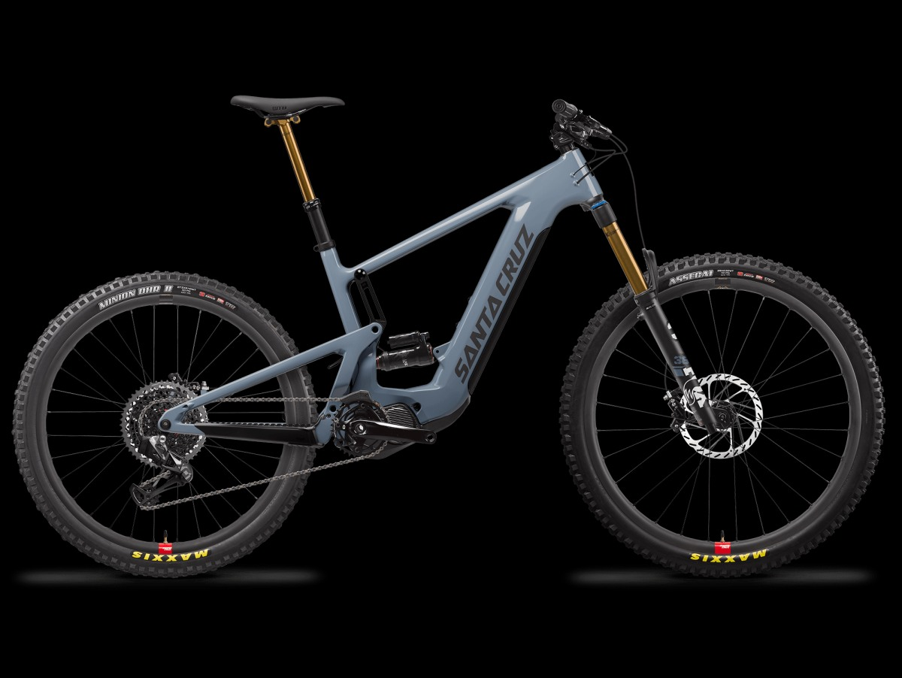
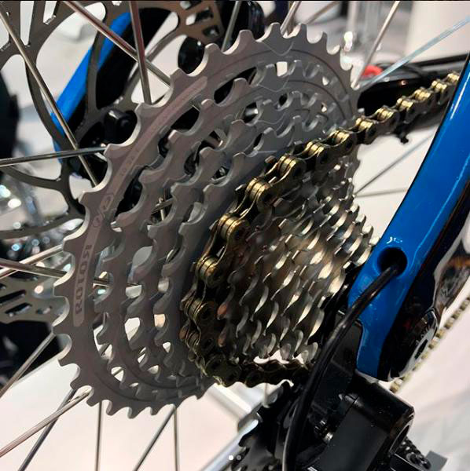
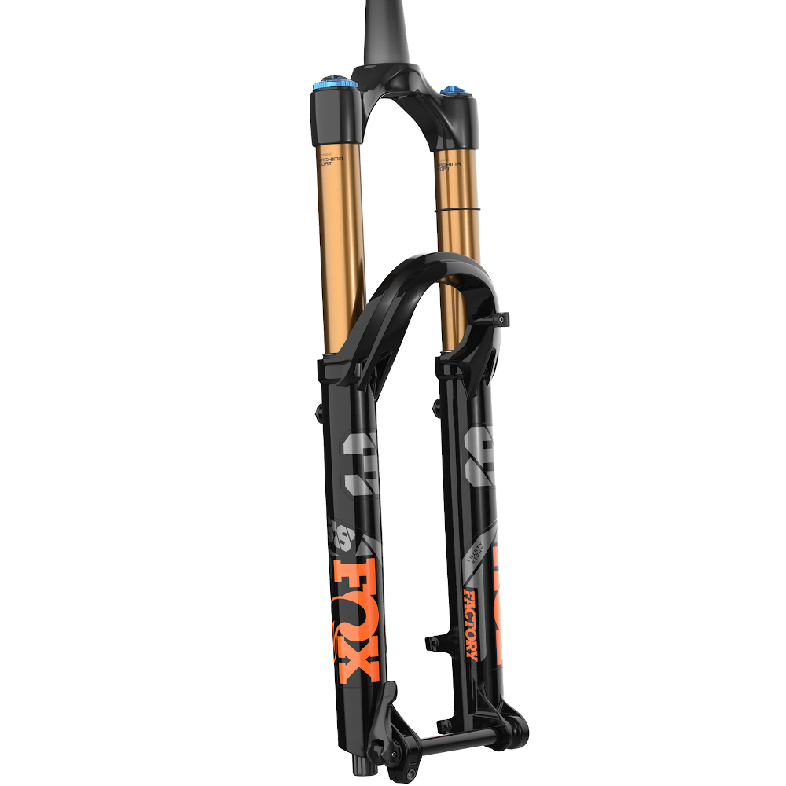
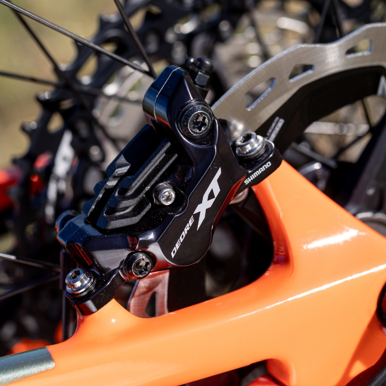

La bicicleta de montaña
Es un tipo de bicicleta diseñada para el ciclismo de montaña. En algunos países, como Venezuela o República Dominicana, la denominan bicicleta montañera. La bicicleta de montaña es un tipo de bicicleta diseñada para el ciclismo de montaña. En algunos países, como Venezuela o República Dominicana, la denominan bicicleta montañera.Una bicicleta de doble suspensión es lo más importante del avance en el ciclismo en el siglo XX. dado que proporciona a los ciclistas la posibilidad de llegar a lugares que en otro tiempo se consideraban inaccesibles para dicho vehículo. Mejorando la maniobrabilidad y control en terrenos irregulares.
-Características-Se caracteriza por unos componentes (cuadro, ruedas, sistemas de cambio, etc.) más resistentes a los impactos del terreno y por estar provistas, en muchos casos, con un sistema de suspensión que puede ser simple solo suspensión en la horquilla delantera
-Cambios-
te permite avanzar en diferentes terrenos aportando suavidad en cuestas, velocidad en planos y precisión en descenso de montaña.Cuando se mueve o presiona la palanca de cambios, los desoladores se mueven para que la cadena salte de un plato a otro.Según el número de platos y piñones del cassette puedes tener una bicicleta de 2×10, 2×11, 2×12, 1×11 o 1×12
-Tipos de -Cambios-Las marchas largas: se llaman así porque pedaleamos poco pero avanzamos mucho.
Las marchas cortas: sucede al contrario, en este caso pedaleamos mucho pero avanzaremos poco recorrido.

-SUSPENSIÓN-
Es el sistema utilizado para amortiguar al ciclista y toda o parte de la bicicleta con el fin de protegerlos de la irregularidad del terreno
Suspensión rígida. Este sistema es de los básicos y más antiguos que hay.
Suspensión semirígida. Se asemeja bastante al sistema rígido, aunque estas incorporan un brazo adicional que consigue disminuir las inclinaciones y vibraciones.
Suspensión independiente.
-FRENOS DE DISCO-
Los frenos de disco hidráulicos de MTB, y en general de cualquier bicicleta, consisten en una palanca de freno que empuja a alta presión un líquido para que accionan por presión unos pistones que empujan las pastillas de freno , y estas presionan el disco para frenar la bicicleta.Las pastillas de los frenos de disco de las bicicletas tienen una vida útil aproximada de 6 y 12 meses. Pero todo dependerá del uso del ciclista y del montaje de la bici.
